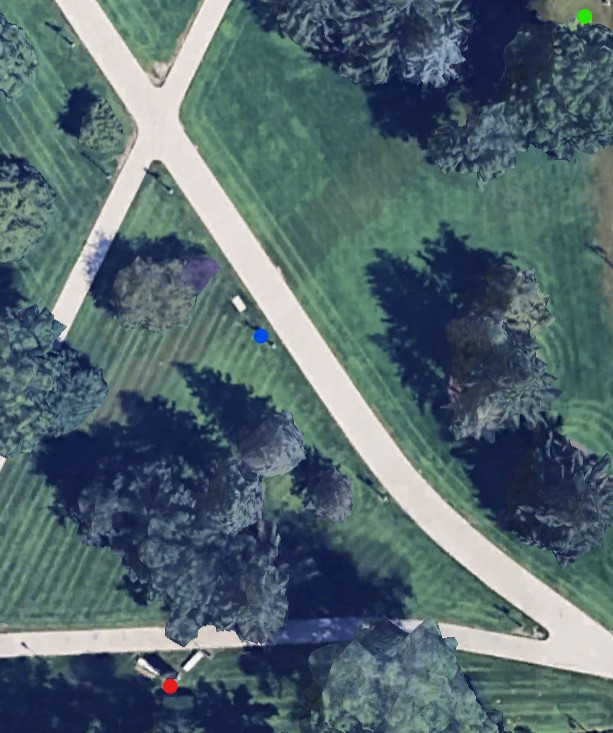

Stats
Par: 10
Distance: 275 ft
Hole Description
Starting from the square near the fire hydrant from the last hole, throwing down the hill there is a mandatory to the right of the lamppost ahead by the path, and then the target is the large rectangular oboelisk monument towards the road.
Map key: green dot starting box, red dot target, blue dot mandatory.